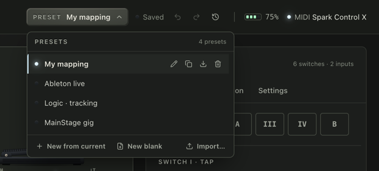
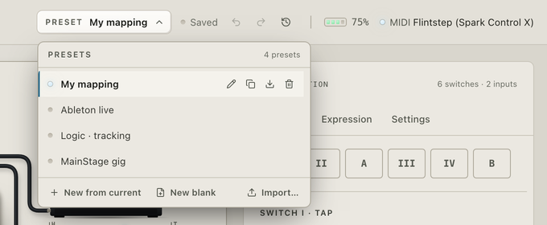
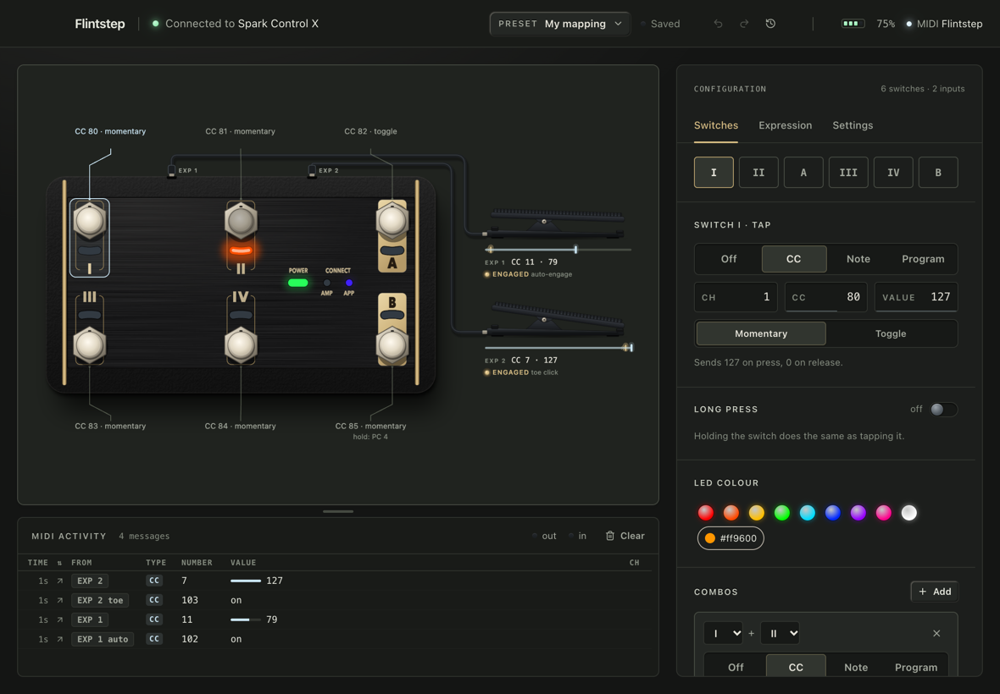
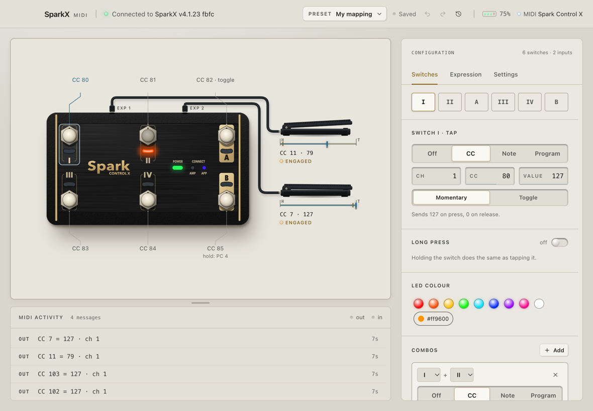

Use your Spark Control X as a MIDI foot controller.
Flint is a free menu-bar app for macOS. It connects to the pedal over Bluetooth and shows up in Logic, Ableton, MainStage or any other MIDI app as a device called Spark Control X.
Press II and your DAW gets CC 81 = 127. Let go and it gets 0.
What it does
-
Six switches, any message
Each switch sends a CC, momentary or toggle, a note or a program change. Holding a switch can send something else, and pressing two switches together is a trigger of its own.
IICC 81 = 127 · ch 1 -
Two expression inputs
Plug TRS expression pedals into EXP 1 and EXP 2. Set heel and toe in Flint and invert the direction if you need to. Each input can also act as a switch: it fires when the pedal leaves the heel, or when you click the toe down.
EXP 1CC 11 = 0 to 127 · ch 1 -
LEDs your DAW can drive
A switch lights while you hold it and while its toggle is on. Or turn on MIDI feedback: send the same CC back to the
Spark Control X LEDsport and the LED shows the real state, like a plugin bypassed or a track armed. The AMP and APP lamps can show MIDI traffic, the connection or USB power. -
Presets
Keep a mapping per DAW or per gig and switch between them from the menu bar. Each preset has its own undo history. Export one as a file to use it on another Mac.


-
Nothing else to install
No Spark app, no amp, no firmware update. Flint never writes to the profiles stored on the pedal. It remembers your pedal, reconnects on its own, and shows the battery level and charging in the menu bar.


How it works
-
Turn the pedal on
Keep the Spark app closed. The pedal talks to one app at a time.
-
Open Flint
It finds the pedal and connects. macOS asks for Bluetooth access the first time. After that Flint stays in the menu bar.
-
Map it in your DAW
Pick Spark Control X as a MIDI input and use MIDI learn, or change the messages in Flint to match what your DAW expects.
Download
macOS 12+ · Apple Silicon and Intel
You need a Spark Control X. Expression pedals are optional and need TRS cables.
Flint isn't notarized yet, so macOS blocks the first launch: click Open Anyway in System Settings › Privacy & Security, or on macOS 14 and earlier right-click the app and choose Open.
Open source
Flint is free and MIT licensed. The code, issues and releases are on GitHub. The protocol work started from Paul Hamshere's Spark-Control-X notes.